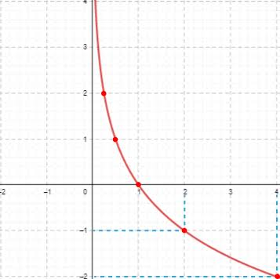

Função Logarítmica
Mas oque é Logaritmo?
Logaritmo é a operação inversa á exponenciação.
O resultado dela é o expoente necessário para que uma
base se transforme em outro número.
O Logaritmo é escrito da seguinte forma:
loga b
O a é chamado de base, e o
b é chamado de logaritmando.
Para a > 0 e a ≠ 1, b > 0
O logaritmo também tem a seguinte relação com a exponenciacão:
Se ax = b
Então loga b = x
Gráfico da função logarítmica
A função logarítmica é qualquer função onde
f(x) = loga x
Elementos e pontos importantes
- O domínioda função é x > 0
- A raíz da função é sempre 1
- para a > 1, a função é crescente
- para 0 < a > 1, a função é decrescente
- o gráfico se aproxima infinitamente do eixo y mas nunca encosta
